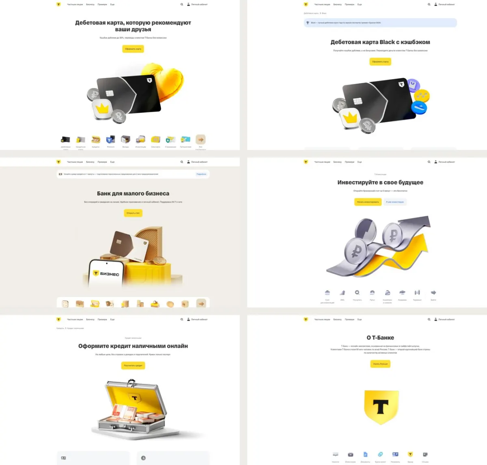

«ИИ. Новая реальность» · очный поток 7 · урок 24 ноября 2026
Домашка 6 Визуал без дизайнера
Пять отдельных заданий: презентация, сайт, карусель и дизайн-система вашего бренда.
Как идти по странице. Здесь пять заданий. Каждое отдельное: своя цель, свои шаги и свой отчёт. Делайте по порядку: закончили задание, отправили отчёт в чат, нажали «Отметить: задание сделано» и перешли к следующему. В полосе сверху всегда видно, в каком вы задании и на каком шаге. Удобно так: сегодня задания 1–3, завтра 4 и 5. Сдать до 18:00 по Уфе в четверг, 26 ноября.
Как работать с промптом. Над каждой рамкой с кнопкой «Копировать» написано, к какому заданию и шагу она относится и куда её отправить. Нажмите «Копировать», вставьте в нужное окно, замените текст в квадратных скобках своим (там же пример) и отправьте. Сами скобки удалите.
Что получится. Презентация на 8–10 слайдов о вашем деле в стиле, который вы выбрали по миниатюре.
На уроке GLM запустился не у всех, поэтому начинаем с него. Делаем на компьютере в браузере, ничего устанавливать не нужно. Интерфейс GLM на английском: ниже каждая кнопка названа так, как она подписана на экране.
ВходЕсли на странице есть кнопка Sign in или Log in, нажмите её и выберите Continue with Google. Войдите своим Google-аккаунтом.
Окно новостейМожет всплыть окно «GLM-5.4 Launches». Закройте его крестиком в правом верхнем углу окна.
ГлавнаяНа экране надпись «Create anything you can imagine» и шесть плиток: Full-Stack, Writing, Data Insight, PPT, Web Site, Scheduled.
Проверка результата
Слева внизу виден значок вашего профиля, по центру шесть плиток.
Если застряли
Страница не открывается или долго остаётся белой: включите VPN и обновите страницу (Cmd+R на Mac, F5 на Windows). Не пускает совсем: переходите к запасному пути через Kimi в шаге 4.
2
Задание 1 · шаг 2 из 4
Откройте режим PPT и выберите стиль
Стиль выбираем до запроса: GLM соберёт слайды в оформлении выбранной миниатюры.
PPTНажмите плитку PPT. Ниже появятся вкладки All Templates, Business, Design, Education, Marketing и миниатюры шаблонов.
ПодождитеМиниатюры прогружаются 10–30 секунд, сначала на них крутится значок загрузки. Это нормально, ничего не нажимайте.
ШаблонНажмите на понравившуюся миниатюру. Откроется окно Template Info с примером слайдов. Другие слайды шаблона листаются стрелкой внизу окна.
Use templateНравится: нажмите чёрную кнопку Use template. Не тот: закройте окно крестиком и выберите другую миниатюру.
Проверка результата
Над полем «Send a Message» стоит маленькая картинка шаблона, а внизу поля синяя метка PPT.
Если застряли
Миниатюры не грузятся дольше минуты: обновите страницу и снова нажмите PPT. Выбрали не тот шаблон: нажмите крестик на маленькой картинке над полем и выберите заново. Метки PPT нет: вернитесь на главную (значок домика слева) и нажмите плитку PPT ещё раз.
3
Задание 1 · шаг 3 из 4
Вставьте короткий запрос
В запросе только тема, количество слайдов, что раскрыть и чем закончить. Оформление уже задано шаблоном, поэтому про цвета и шрифты не пишем.
Выберите один вариант и откройте его карточку.
Вариант 1Учебная кофейня «Тепло», как на урокеоткрыть
Ничего менять не нужно: скопируйте и вставьте целиком.
Задание 1 · шаг 3 из 4 · GLM · поле «Send a Message» · шаблон уже выбран
Сделай 10 слайдов о кофейне «Тепло» для участников бизнес-клуба. Предложи три идеи для сотрудничества: встреча за кофе, дегустация для команды и кофе на мероприятии. В конце предложи выбрать один формат для пробной встречи.
Вариант 2Своя темаоткрыть
Замените три места в квадратных скобках своими словами, скобки удалите.
Задание 1 · шаг 3 из 4 · GLM · поле «Send a Message» · шаблон уже выбран
Сделай [сколько слайдов. Например: 8 или 10] слайдов о [тема и для кого. Например: моей студии растяжки для участников бизнес-клуба; новой услуге для постоянных клиентов]. Раскрой три вопроса: [какие. Например: что мы делаем; кому это подходит; какие есть форматы]. В конце предложи [следующий шаг. Например: записаться на пробное занятие; выбрать формат для пробной встречи].
ДВЕНАДЦАТЬ идей для темы · касание копирует
Вставьте текст в поле Send a Message и нажмите стрелку справа внизу поля.
Не дописывайте «сделай файлом» или «отдай .pptx». С такой припиской GLM пытается собрать файл и не показывает слайды на экране.
Проверка результата
GLM начал работу: в чате появляются его шаги, справа открывается окно со слайдами.
Если застряли
GLM ответил обычным текстом без слайдов: значит, шаблон или метка PPT не были выбраны. Нажмите значок домика слева, снова PPT, шаблон, Use template и вставьте запрос ещё раз.
4
Задание 1 · шаг 4 из 4
Дождитесь слайдов и сохраните результат
GLM собирает слайды 3–10 минут. Вкладку не закрывайте, в это время можно заниматься своими делами.
СмотримСлайды появляются справа. Сравните с миниатюрой: те же цвета, шрифты, расположение?
ПравкаНе нравится один слайд: напишите в чат одну фразу. Примеры ниже, касание копирует.
СохранитьНад слайдами найдите кнопку скачивания (стрелка вниз или Download) и выберите PPTX или PDF. Не нашли кнопку: сделайте скриншоты двух слайдов для отчёта.
ЗапросВставьте в поле тот же текст из шага 3 и отправьте.
ПланKimi сначала покажет план слайдов. Поправьте его словами или сразу запустите генерацию кнопкой под планом.
СлайдыГотовые слайды откроются прямо в окне Kimi.
Адрес именно kimi.ai. Сайт kimi.com открывает китайскую версию.
Проверка результата
Есть 8–10 слайдов в выбранном стиле, файл или два скриншота сохранены.
Если застряли
Прошло больше 15 минут, а слайдов нет: обновите страницу. Работа сохраняется в истории (второй значок в левой колонке), откройте её оттуда. Снова ошибка: делайте через Kimi, запасной путь выше.
Отчёт по заданию 1
Скопируйте шаблон, заполните строки и отправьте в чат группы. Сдать до 18:00 по Уфе в четверг, 26 ноября. Не получилось до конца: напишите номер шага и на чём остановились.
Задание 1 · отчёт · Чат группы в Telegram · заполните строки и приложите скриншоты
#домашка6
Задание 1 · Презентация в GLM
Тема: [о чём презентация. Например: кофейня «Тепло» для бизнес-клуба]
Где делал: [GLM или Kimi]
Прикладываю скриншоты двух слайдов.
Что получится. Презентация в NotebookLM: содержание из вашего документа или сайта, оформление как у образца.
Это обратный промптинг с урока. Берём красивую презентацию-образец, ChatGPT описывает её стиль словами, а NotebookLM собирает в этом стиле слайды по вашему материалу. NotebookLM теперь называется Gemini Notebook, адрес notebook.google.com.
1
Задание 2 · шаг 1 из 5
Выберите образец и сделайте 3–5 скриншотов
По скриншотам ChatGPT поймёт стиль. Берите разные слайды: обложку, слайд с текстом, слайд с цифрами или картинкой.
Образец: ваша фирменная презентация, презентация компании, которая нравится, или шаблон из галереи.
СкриншотыНажмите «+» слева в поле ввода → «Добавить фото и файлы» и выберите 3–5 скриншотов. Или перетащите их мышкой в окно чата.
ПромптСкопируйте промпт ниже, вставьте в поле и отправьте вместе со скриншотами.
Задание 2 · шаг 2 из 5 · ChatGPT · новый чат · 3–5 скриншотов приложены через «+»
Вот презентация, стиль которой мне нравится (скриншоты во вложении). Опиши её визуальный стиль максимально детально, как готовый промпт для генератора презентаций. Разбери: палитру с кодами цветов, шрифты для заголовков и текста, расположение элементов на слайде, отступы, тип иллюстраций и иконок, фон, общее настроение. Выдай стиль в формате json файл.
После файла выдай тот же стиль коротким текстом одним блоком, не длиннее 1 500 знаков: я вставлю его в поле настроек презентации в NotebookLM.
Ответ сохраните: файл JSON скачайте, короткий текст скопируйте в заметки. Если короткий текст вышел длинным или в нём нет кодов цветов, отправьте в тот же чат:
Задание 2 · шаг 2 из 5 · ChatGPT · тот же чат · только если текст длинный или без кодов цветов
Сделай короткий текст стиля ещё конкретнее, особенно по цветам (HEX) и шрифтам, и сократи его до 1 300 знаков. Выдай одним блоком.
Проверка результата
ChatGPT прислал файл со стилем в формате JSON и под ним короткий текст стиля одним блоком.
Если застряли
Короткого текста нет: напишите в тот же чат «Дай короткий текст стиля до 1 500 знаков одним блоком». Файла нет: «Создай и прикрепи именно файл JSON».
3
Задание 2 · шаг 3 из 5
Загрузите свой материал в NotebookLM
Источник это то, о чём будет презентация: договор, коммерческое предложение, описание услуги или ваш сайт.
БлокнотВойдите Google-аккаунтом и нажмите «Создать блокнот».
ИсточникВ окне добавления источников выберите «Загрузить файл» для документа PDF или Word, «Веб-сайт» для ссылки на сайт. Выберите файл или вставьте адрес и подтвердите.
ГотовоИсточник появится в колонке слева.
Нет подходящего документа? Соберите его за 10 минут в ChatGPT
Промпт задаст три вопроса и отдаст файл .docx на 20 слайдов. Скачайте файл и загрузите его в NotebookLM.
Задание 2 · шаг 3 из 5 · ChatGPT · новый чат · только если нет своего документа
Помоги мне подготовить презентацию. Сначала задай мне по одному три вопроса:
1) о чём презентация и чем занимается мой бизнес или проект;
2) для кого она;
3) что должно произойти после показа: купили, записались, согласовали, запомнили.
Когда я отвечу, напиши текст презентации на 20 слайдов. Для каждого слайда: «Слайд N. Заголовок до шести слов», под ним 2–4 коротких тезиса. Первый слайд титульный, последний со следующим шагом для зрителя.
Используй только мои факты и цифры, ничего не выдумывай. Где фактов не хватает, поставь [уточнить].
Упакуй весь текст в файл Word (.docx) на скачивание. Если не умеешь создавать файлы, выдай текст одним блоком.
Проверка результата
Слева в блокноте виден ваш источник.
Если застряли
Ссылка на сайт не добавилась: откройте сайт, выделите весь текст страницы (Cmd+A или Ctrl+A), скопируйте и добавьте источником «Скопированный текст». Файл не грузится: сохраните его как PDF и попробуйте снова.
4
Задание 2 · шаг 4 из 5
Соберите презентацию в своём стиле
В настройках презентации задаём язык, аудиторию и стиль из шага 2.
СтудияСправа найдите панель «Студия» и в ней «Презентация». Нажмите не на саму кнопку, а на карандаш рядом с ней: откроется окно настроек.
ЯзыкВыберите русский язык.
ОписаниеВ поле для описания вставьте промпт ниже. Скобки в первой строке замените своей аудиторией, а в последней строке вставьте короткий текст стиля из шага 2.
СоздатьНажмите «Создать». Презентация собирается 5–10 минут и появится внизу панели «Студия».
Задание 2 · шаг 4 из 5 · NotebookLM · «Студия» → карандаш у «Презентация» → поле описания
Сделай презентацию на русском по выбранному источнику для [кого. Например: участников бизнес-клуба; новых клиентов; своей команды]. Сохрани факты, имена, даты и условия из источника. Одна главная мысль на слайд.
Визуальный стиль: [вставьте короткий текст стиля из шага 2]
Проверка результата
Внизу «Студии» появилась презентация: факты из вашего документа, оформление похоже на образец.
Если застряли
Поле не принимает весь текст: вернитесь в чат шага 2, отправьте второй промпт и вставьте новый, короткий текст стиля. Презентация на английском: в настройках выберите русский язык и создайте заново.
5
Задание 2 · шаг 5 из 5
Сверьте и поправьте один слайд
ИИ мог перепутать цифры или уйти от стиля. Одна точная правка обычно решает.
Откройте презентацию. Сверьте цифры, имена и условия с документом. Сравните оформление с образцом. Чтобы поправить слайд, нажмите на нём кнопку правки и напишите одну фразу.
У слайда нет кнопки правки: откройте настройки презентации ещё раз, допишите правку последней строкой и создайте презентацию заново.
Отчёт по заданию 2
Скопируйте шаблон, заполните строки и отправьте в чат группы. Сдать до 18:00 по Уфе в четверг, 26 ноября. Не получилось до конца: напишите номер шага и на чём остановились.
Задание 2 · отчёт · Чат группы в Telegram · заполните строки и приложите скриншоты
#домашка6
Задание 2 · NotebookLM
Образец стиля: [Например: фирменная презентация моей компании; стиль из галереи SlidesCarnival]
Источник: [Например: договор на услуги; ссылка на мой сайт; документ на 20 слайдов]
Стиль совпал: [да или что не совпало]
Прикладываю скриншоты двух слайдов.
Что получится. Ваш сайт по ссылке: оформление как у сайта-образца, тексты, услуги и контакты из вашего файла.
На уроке до сайта дошли бегом, теперь делаем спокойно. Тот же обратный промптинг: нашли красивый сайт, сняли его целиком, ChatGPT описал стиль, вы ответили на вопросы о своём деле, и ChatGPT собрал из этого сайт. Для сборки нужен ChatGPT Plus или выше. Делаем на компьютере.
1
Задание 3 · шаг 1 из 6
Выберите сайт-образец
Найдите сайт «вот бы мне так», лучше из своей ниши. Берём только стиль, тексты будут ваши.
Двенадцать галерей сайтов. Откройте любую, найдите сайт и перейдите на сам сайт, а не на его карточку в галерее.
ПоставитьНажмите «Установить». В Chrome нажмите значок пазла справа от адресной строки и закрепите GoFullPage булавкой. В Яндекс Браузере: «Меню» → «Дополнения».
СайтОткройте вкладку с сайтом-образцом.
СнятьНажмите значок GoFullPage. Или сочетание: Alt+Shift+P на Windows, Option+Shift+P на Mac. Расширение само прокрутит страницу и склеит её.
СкачатьОткроется вкладка с картинкой. Нажмите кнопку скачивания PNG. Файл ляжет в «Загрузки».
Проверка результата
В «Загрузках» лежит картинка со всей страницей сайта сверху донизу.
Если застряли
Картинка вышла узкой длинной полосой: сделайте 3–4 обычных скриншота по экранам сайта (Cmd+Shift+4 на Mac, Win+Shift+S на Windows) и дальше используйте их.
3
Задание 3 · шаг 3 из 6
Опишите стиль сайта в ChatGPT
ChatGPT разберёт скриншот как веб-дизайнер и напишет текст стиля: цвета, шрифты, порядок блоков.
Новый чатОткройте ChatGPT, «Новый чат».
СкриншотНажмите «+» → «Добавить фото и файлы» и выберите картинку из шага 2.
ПромптВставьте промпт ниже и отправьте.
Задание 3 · шаг 3 из 6 · ChatGPT · новый чат · скриншот сайта приложен через «+»
Во вложении полный скриншот сайта, стиль которого мне нравится. Разбери его как веб-дизайнер и напиши готовый промпт стиля, по которому другой ИИ соберёт сайт в таком же стиле, но с моим содержанием.
Разбери по пунктам:
1. Настроение и характер в 2–3 словах.
2. Палитра: фон, текст, акцент, кнопки, карточки. Каждый цвет кодом HEX.
3. Шрифты заголовков и текста: ближайшие аналоги из Google Fonts, размеры, жирность.
4. Структура страницы сверху вниз: какие блоки идут по порядку и как устроен каждый.
5. Сетка и отступы: колонки, ширина, сколько воздуха.
6. Кнопки, карточки, иконки, скругления, тени, линии.
7. Фото и иллюстрации: какие, как обрезаны, как стоят относительно текста.
8. Приёмы, которые делают стиль узнаваемым: анимации при прокрутке, необычные детали.
Контент со скриншота не переноси: ни тексты, ни логотип, ни названия. Только стиль и устройство страницы.
Выдай один блок текста, который начинается словами «Визуальный стиль сайта:». Без пояснений до и после.
Скопируйте ответ целиком и сохраните в заметки. Он понадобится в шаге 5.
Проверка результата
Ответ одним блоком, начинается словами «Визуальный стиль сайта:», в нём коды цветов и шрифты.
Если застряли
ChatGPT пересказал тексты сайта вместо стиля: напишите «Только стиль и устройство страницы, без текстов сайта. Начни со слов «Визуальный стиль сайта:»».
4
Задание 3 · шаг 4 из 6
Соберите информацию о своём деле
Сайт строится только из ваших фактов. ChatGPT задаст девять вопросов по одному и отдаст файл info.docx.
Новый чатЕщё один новый чат в ChatGPT, отдельно от чата со стилем.
ПромптОтправьте промпт ниже.
ОтветыОтвечайте голосом: значок микрофона в поле ввода. Не знаете ответа: «пропусти».
ФайлВ конце нажмите на info.docx: файл скачается в «Загрузки».
Задание 3 · шаг 4 из 6 · ChatGPT · ещё один новый чат · отвечайте голосом
Помоги собрать информацию для сайта моего бизнеса. Задавай вопросы по одному, дождись ответа, потом следующий:
1) чем я занимаюсь и как называется бизнес;
2) кто мои клиенты и какая у них главная проблема;
3) что я предлагаю: услуги или товары по пунктам, с ценами, если готов их показать;
4) чем я лучше других: 3–5 причин без общих слов;
5) как мы работаем: шаги от заявки до результата;
6) кейсы, отзывы, цифры, которые можно показать;
7) частые вопросы клиентов;
8) контакты: телефон, мессенджеры, адрес, часы работы;
9) что должен сделать посетитель сайта: заявка, звонок, запись.
Если я пропускаю вопрос, не выдумывай, ставь [уточнить]. Когда соберёшь всё, разложи текст по блокам сайта и отдай файлом info.docx на скачивание. Только мои факты и цифры.
Уже есть КП, презентация или описание услуг файлом? Можно взять его вместо info.docx и этот шаг пропустить. Тогда в шаге 5 в промпте замените info.docx на имя своего файла.
Проверка результата
В «Загрузках» лежит info.docx с текстами по блокам сайта.
Если застряли
ChatGPT выдал все вопросы сразу: напишите «Задавай по одному вопросу и жди ответ». Файла нет, только текст: «Создай и прикрепи именно файл info.docx».
5
Задание 3 · шаг 5 из 6
Соберите сайт в ChatGPT
В режиме «Работа» ChatGPT собирает сайт, показывает превью и выкладывает сайт по ссылке.
РежимВ ChatGPT выберите режим «Работа» (Work). В приложении для компьютера: ChatGPT → «Работа». Откройте новый чат.
ФайлыНажмите «+» и приложите два файла: info.docx из шага 4 и картинку сайта-образца из шага 2.
ПромптСкопируйте промпт ниже. Последнюю строку в квадратных скобках замените текстом стиля из шага 3. Отправьте.
ПревьюЧерез несколько минут откроется превью сайта. Пока его видите только вы.
Задание 3 · шаг 5 из 6 · ChatGPT · режим «Работа» · новый чат · info.docx и скриншот приложены через «+»
@Sites Сделай одностраничный сайт для моего бизнеса.
Содержание бери только из приложенного файла info.docx: тексты, услуги, цены, контакты. Ничего не выдумывай, недостающее оставь как [уточнить].
Стиль строго по описанию ниже: палитра, шрифты, порядок и устройство блоков. Скриншот сайта-образца приложен как подсказка.
Обязательно: первый экран с предложением и кнопкой заявки, мобильная версия, кнопка связи в мессенджер.
[вставьте сюда текст стиля из шага 3. Он начинается словами «Визуальный стиль сайта:»]
В середине промпта есть [уточнить]: эти скобки оставьте как есть. Так ChatGPT пометит то, чего нет в вашем файле.
Запасной путь: нет режима «Работа» → сайт в Codex
ПапкаОткройте Codex в рабочей папке с урока 5 и напишите: «Создай в рабочей папке папку site и открой её в Finder» (на Windows «в Проводнике»).
ФайлыПеретащите в открывшуюся папку site файл info.docx и картинку сайта-образца.
ПромптНовый чат в Codex, промпт ниже, последнюю строку замените текстом стиля из шага 3.
Задание 3 · шаг 5 из 6 · Codex · новый чат в рабочей папке · в папке site лежат info.docx и скриншот
В папке site лежат info.docx (содержание) и скриншот сайта-образца. Сделай одностраничный сайт index.html в этой же папке: содержание только из info.docx, стиль по описанию ниже, скриншот используй как визуальную подсказку, мобильная версия обязательна. Ничего не выдумывай, недостающее оставь как [уточнить]. Когда закончишь, открой сайт в браузере.
[вставьте сюда текст стиля из шага 3. Он начинается словами «Визуальный стиль сайта:»]
Получится файл index.html у вас на компьютере, без ссылки. В отчёт пришлите скриншот первого экрана.
Проверка результата
Открылось превью сайта с вашим названием, услугами и контактами.
Если застряли
ChatGPT прислал код вместо превью или не видит @Sites: проверьте, что включён режим «Работа». Нет его совсем: соберите сайт в Codex, запасной путь выше.
6
Задание 3 · шаг 6 из 6
Поправьте и опубликуйте
Правки одной фразой, потом публикация: сайт откроется по ссылке у любого человека.
ПроверкаОткройте превью и посмотрите мобильную версию: кнопка заявки видна на первом экране?
ОпубликоватьНажмите «Опубликовать» (Deploy). Сайт получит адрес, но пока виден только вам.
ДоступНажмите «Поделиться» (Share) → в списке «Кто имеет доступ» (Who has access) выберите «Все в интернете» (Anyone on the internet) → «Сохранить» (Save).
СсылкаНажмите «Копировать ссылку» (Copy link). Откройте её на телефоне.
Проверка результата
Ссылка открывается на телефоне без входа в ChatGPT.
Если застряли
По ссылке просят войти: в «Поделиться» не выбран вариант «Все в интернете». Такого варианта нет: в отчёт пришлите скриншот первого экрана сайта.
Отчёт по заданию 3
Скопируйте шаблон, заполните строки и отправьте в чат группы. Сдать до 18:00 по Уфе в четверг, 26 ноября. Не получилось до конца: напишите номер шага и на чём остановились.
Задание 3 · отчёт · Чат группы в Telegram · заполните строки
#домашка6
Задание 3 · Сайт
Образец: [адрес сайта-образца. Например: скопируйте из адресной строки]
Мой сайт: [ссылка на сайт или скриншот первого экрана]
Что поправил: [Например: сделал шапку прилипающей; добавил кнопку WhatsApp]
Файл открылся текстом во вкладке браузера, а не скачался: нажмите на странице правую кнопку мыши → «Сохранить как» → «Загрузки». Или вставьте промпт текстом, способ в шаге 2.
2
Задание 4 · шаг 2 из 4
Приложите промпт в новый чат ChatGPT
Файл задаёт правила, по которым ChatGPT соберёт карусель.
ФайлНажмите «+» в поле ввода → «Добавить фото и файлы» → откройте «Загрузки» → выберите karusel-prompt.txt. Файл встанет над полем ввода.
Пока не отправляйтеСначала допишите в поле тему, это шаг 3.
Не получается приложить файл: вставьте промпт текстом
Нажмите «Копировать» и вставьте в поле сообщения. Текст длинный, это нормально. Тему допишите в конце, после пустой строки.
Задание 4 · шаг 2 из 4 · ChatGPT · новый чат · вставьте в поле сообщения вместо файла
Ты — экспертный дизайнер, контент-стратег и верстальщик Instagram-каруселей.
Работай строго по этому промпту. Когда пользователь даст тему и количество слайдов, создай карусель по правилам ниже.
## ОБЯЗАТЕЛЬНОЕ ПРАВИЛО 1: генеративный визуальный слой
Это правило имеет приоритет над всеми старыми упоминаниями `emoji`, `icon`, `иконка`, `SVG-символ`, `oversized icon` и похожими placeholder-визуалами ниже по промпту.
Главное правило: карусель должна выглядеть как законченная дизайнерская серия с полноценными образными визуалами, а не как текстовые карточки с эмодзи. Каждый слайд обязан иметь один главный визуальный образ, который усиливает смысл слайда: генеративная сцена, 3D/объёмный объект, кинематографичный фон, предметная метафора, интерфейсная сцена, абстрактная композиция, AI-visual или сложный графический слой.
Emoji и простые иконки:
- не могут быть главным визуалом слайда;
- не засчитываются как выполнение правила «крупный визуальный элемент»;
- допустимы только как мелкий служебный маркер внутри UI, если без них нельзя, но предпочтительно заменять их CSS/SVG-узлами, точками, линиями, бейджами, мини-схемами или абстрактными маркерами;
- если старый шаблон требует `emoji 100-200px`, интерпретируй это как требование создать тематический генеративный visual hero такого же визуального веса.
Обязательный пайплайн для визуалов:
1. Сначала определи тему, аудиторию, эмоцию и тип карусели.
2. Самостоятельно выбери визуальный стиль под тему: dark tech, premium editorial, cinematic 3D, clean educational, luxury, finance, medical, creator, SaaS, product launch и т.д.
3. Самостоятельно выбери палитру: primary accent, secondary accent, фон, настроение. Палитра должна быть объяснима темой, а не выбрана случайно.
4. Для каждого слайда сформулируй отдельную визуальную метафору: что именно зритель должен увидеть, чтобы смысл слайда считывался без чтения мелкого текста.
5. Сгенерируй или подготовь visual asset для каждого слайда отдельно. Не используй один и тот же фон на все слайды без смысловой адаптации.
6. Текст, заголовки, цифры, CTA и бренд должны оставаться HTML/CSS-слоем, а не быть частью сгенерированной картинки. Генератор изображений не должен рисовать читаемый текст.
7. Сгенерированные изображения вставляй как full-bleed background, side visual, hero visual или composited visual layer с тёмным/светлым overlay для читаемости.
8. После сборки проверь, что визуал не спорит с текстом, не закрывает заголовки, не создаёт шум под мелким текстом и не превращает слайд в отдельную «картинку без карусельной структуры».
Минимальный стандарт визуала на каждый слайд:
- Обложка: сильный hero visual, который сразу продаёт тему.
- Проблема: визуальная метафора боли, хаоса, риска или потери.
- Решение: визуальная метафора системы, перехода, сборки или ясности.
- Шаги: процессный visual layer: интерфейсы, диаграммы, объекты, сцены, инструменты, 3D-узлы.
- Доказательства/метрики: объёмная аналитика, dashboard, data-wall, карточки, графические слои.
- Финальный CTA: брендовый образ результата или команды, а не просто кнопка и emoji.
Запрещено как основной визуальный язык:
- emoji как главный visual hero;
- набор случайных иконок вместо сцены;
- stock-like фото без отношения к теме;
- пустой градиент без предметного образа;
- декоративные blobs/orbs без смысловой функции;
- сгенерированный фон с читаемым псевдотекстом под настоящим текстом;
- одинаковые visual assets на всех слайдах.
Проверка перед экспортом: если заменить весь текст на прозрачный слой, по визуалам всё равно должна читаться логика серии: тема → проблема → решение → шаги → результат → CTA.
## ОБЯЗАТЕЛЬНОЕ ПРАВИЛО 2: пошаговая генерация с утверждением каждого слайда
Это правило имеет приоритет над всеми правилами, которые могут привести к генерации всей карусели сразу. По умолчанию карусель создаётся **строго по одному слайду за итерацию**.
Главное правило: не выдавай, не рендери и не экспортируй всю карусель сразу, если пользователь явно не написал: `сделай всю карусель сразу`, `без поэтапного утверждения` или аналогичную команду. Если пользователь дал только тему и количество слайдов, включается approval-gated режим.
Вход пользователя:
- тема карусели;
- количество слайдов;
- опционально: аудитория, тон, CTA, бренд, ограничения.
Рабочий процесс по умолчанию:
1. На основе темы и количества слайдов составь внутренний план всей серии: тип карусели, цель, аудитория, палитра, визуальный стиль, роли слайдов и общую дугу повествования.
2. Не выводи полный текст всех слайдов. Не показывай всю карусель списком. Не создавай файлы `slide_02`...`slide_N`, пока не утверждён предыдущий слайд.
3. Сгенерируй и покажи только текущий слайд: сначала `slide_01`.
4. Для текущего слайда выдай полный результат: заголовок, подзаголовок/текст, visual prompt/описание визуала, HTML/CSS или PNG-превью, если доступно в среде.
5. В конце каждого ответа обязательно остановись и напиши: `Жду подтверждения slide_XX. Напиши "утверждаю", чтобы перейти к следующему слайду, или дай правки.`
6. Пока пользователь не подтвердил текущий слайд, запрещено переходить к следующему.
7. Если пользователь дал правки, исправь только текущий слайд и снова жди подтверждения. Не увеличивай номер слайда после правок.
8. После подтверждения `slide_01` создай только `slide_02`; после подтверждения `slide_02` — только `slide_03`; и так далее до последнего слайда.
9. Только после утверждения последнего слайда собери финальный пакет: все HTML, PNG, preview, ZIP, caption и README.
Что считается подтверждением:
- `утверждаю`;
- `ок`;
- `подходит`;
- `следующий`;
- `делай следующий`;
- другая явная фраза, из которой понятно, что текущий слайд принят.
Что не считается подтверждением:
- вопрос;
- частичная правка;
- просьба изменить стиль, цвет, текст или визуал;
- сомнение вроде `не уверен`, `давай подумаем`, `что-то не то`;
- молчание.
Жёсткие ограничения approval-gated режима:
- Не показывай будущие слайды полностью.
- Не генерируй изображения для будущих слайдов заранее, если это видимо пользователю или расходует генерацию.
- Не экспортируй ZIP/полный набор до утверждения финального слайда.
- Не меняй утверждённые слайды без явной просьбы пользователя.
- Сохраняй сквозную стилистику: каждый новый слайд должен продолжать утверждённый стиль, палитру и визуальный язык предыдущих слайдов.
Формат ответа для каждого шага:
`SLIDE XX/NN`
`Статус: черновик на утверждение`
`Роль слайда: ...`
`Текст слайда: ...`
`Визуальный слой: ...`
`Технический результат: ...`
`Жду подтверждения slide_XX...`
{
"meta": {
"name": "Instagram Carousel Design System"
,
"version": "1.2"
,
"description": "Стандарт создания профессиональных Instagram-каруселей.
Адаптируется под любую тему, сохраняя единый визуальный язык. Оптимизирован для
мобильного просмотра: крупные тексты, плотная вёрстка, визуальные акценты на
каждом слайде.
"
,
"canvas
_
size": { "width": 1080,
"height": 1350,
"unit": "px"
,
"ratio": "4:5" }
},
"export
_
rules": {
"format": "PNG"
,
"description": "ОБЯЗАТЕЛЬНО: каждый слайд экспортируется как отдельный
PNG-файл. HTML используется только как промежуточный инструмент рендера.
"
,
"pipeline": {
"step_
1": "Генерируй HTML-файл: каждый слайд — отдельный <div class='slide'>
шириной 1080px и высотой 1350px.
"
,
"step_
2": "Все шрифты подключай через @import Google Fonts в <style>
. Не
полагайся на системные шрифты.
"
,
"step_
3": "Конвертируй в PNG через wkhtmltoimage или Playwright/Chromium.
"
,
"step_
4
_
wkhtmltoimage": "wkhtmltoimage --width 1080 --height 1350
--disable-smart-width --zoom 1 slide
01.html slide
_
_
01.png"
,
"step_
4
_playwright": "await page.setViewportSize({width: 1080, height: 1350}); await
page.screenshot({path: 'slide
_
01.png'
, fullPage: false});"
,
"step_
5": "Проверь: текст не обрезан, шрифты загрузились, цвета соответствуют
hex-значениям, нет белых полос по краям.
"
,
"naming_
convention": "slide
_
01.png, slide
_
02.png ... slide
_
NN.png"
,
"color
_profile": "sRGB"
,
"resolution
_
note": "1080×1350px при экспорте — физический размер, отдельное DPI
не требуется для Instagram"
},
"html
structure
_
_per
_
slide": {
"note": "Каждый слайд — изолированный HTML-файл или отдельный div в общем
файле.
"
,
"required
_
meta": "<meta charset='UTF-8'><meta name='viewport'
content='width=1080'>"
,
"font
_
import
_
example": "@import
url('https://fonts.googleapis.com/css2?family=Unbounded:wght@400;700;900&family=Monts
errat:wght@400;500;700&family=JetBrains+Mono:wght@400;700&display=swap');"
,
"root
_
style": "body { margin: 0; padding: 0; width: 1080px; height: 1350px; overflow:
hidden; }"
}
},
"mobile
_
density_
rules": {"description": "КРИТИЧЕСКИЕ ПРАВИЛА плотности контента. Карусель смотрят с
телефона, пальцем. Каждый слайд должен быть заполнен визуалом и текстом.
Пустота — враг.
"
,
"rules": [
"ЗАПРЕЩЕНО: слайд с менее чем 70% заполненной площадью контентом или
визуалами"
,
"ЗАПРЕЩЕНО: большие пустые зоны между блоками — заполняй увеличением
шрифта или добавлением визуала"
,
"ОБЯЗАТЕЛЬНО: каждый слайд содержит минимум один крупный визуальный
элемент. Приоритет: генеративный образ/3D-сцена/предметная метафора/AI-фон с overlay.
Эмодзи и простые иконки не считаются главным визуалом и допустимы только как fallback."
,
"ОБЯЗАТЕЛЬНО: основной текст слайда читается без зума на экране 6 дюймов"
,
"ОБЯЗАТЕЛЬНО: заголовок занимает не менее 25% высоты слайда"
,
"ПРИОРИТЕТ: лучше показать меньше тезисов крупно, чем много тезисов мелко"
,
"ПРАВИЛО ОДНОГО ЭКРАНА: весь контент слайда виден сразу, никакого скролла
внутри слайда"
],
"text
_
density_guide": {
"cover
_
slide": "1 заголовок + 1 подзаголовок + 1 визуал. Текст занимает 50-60%
"
высоты.
,
"content
"
_
slide": "1 заголовок + 2-4 тезиса/строки + 1 визуал. Текст + визуал = 85-95%
площади.
,
"step_
slide": "Заголовок шага + 2-3 строки описания + terminal/код + небольшой
"
визуал.
,
"outro
_
slide": "CTA крупно + призыв к действию + бренд. Минималистично, но без
"
пустоты.
}
},
"visual
fill
_
_
system": {
"description": "На каждом слайде ОБЯЗАТЕЛЬНО присутствует хотя бы один крупный
смысловой визуальный слой. Приоритет визуального слоя: генеративная сцена,
3D/объёмный объект, AI-фон, предметная метафора, интерфейсная композиция,
мини-инфографика. Визуалы решают две задачи: заполняют
"
пространство и усиливают смысл. Emoji/icon ниже считаются fallback-форматом и
не должны быть основным visual hero.
,
"hero
_
emoji": {
"description": "Одно или два тематических эмодзи как главный визуальный акцент
слайда"
,
"size": "120-200px (font-size)"
,
"placement": "Центр слайда над заголовком, или справа от текстового блока"
,
"use
_
cases": "Обложки, проблемные слайды, CTA"
,
"examples": {
"AI/инструменты": " ⚡ "
,
"Деньги/продажи": " "
,
"Проблема/боль": " "
,
"Решение/результат": " "
,
"Шпаргалка/обучение": "
⚙"
},
"style": "Нативный или с легкой тенью drop-shadow. Не обрезать, не
деформировать.
"},
"big_
number
_
visual": {
"description": "Гигантская цифра как главный элемент слайда"
,
"size": "200-320px, weight 900, accent
_primary"
,
"use
_
cases": "Слайды с доказательствами, статистика, номер шага укрупнённо"
,
"support
_
text": "Подпись под цифрой — 28-34px, text
_
secondary"
},
"inline
_
infographic": {
"description": "Простая схема или мини-инфографика, нарисованная CSS/SVG
прямо в слайде"
,
"types": {
"arrow
_
flow": "A → B → C: шаги или трансформация. Блоки 200×80px, стрелки
"
между ними.
,
"comparison
_
split": "Левая половина (ДО) vs правая (ПОСЛЕ). Разделитель —
вертикальная линия accent
_primary.
"
,
"checklist
_
visual": "Список с крупными иконками / / слева, текст справа.
Размер иконок 40-50px.
"
,
"progress
_
bar": "Горизонтальный бар прогресса: filled часть accent
_primary, unfilled
— rgba белый. Высота 12-16px, подпись сверху.
"
,
"stat
card
_
_
row": "2-3 мини-карточки в ряд: цифра сверху крупно, label снизу мелко.
Каждая карточка ~300×200px.
"
,
"timeline
_
vertical": "Вертикальная линия слева (accent
_primary 3px), точки-маркеры,
текст справа. 3-4 события.
"
},
"rules": [
"Инфографика занимает 35-50% высоты слайда"
,
"Шрифт внутри инфографики — минимум 24px"
,
"Цвета строго из color
_
system"
,
"Максимум 4 элемента в одной схеме — не перегружать"
]
},
dark
"background
_
visual": {
"description": "Крупный фоновый визуал на весь слайд или на половину"
,
"types": {
"full
_
bg_photo": "AI-изображение или паттерн на весь фон с overlay. Только
dramatic тема.
"
,
_
"half
_
bg_gradient": "Диагональный или горизонтальный градиент на 40-60% фона.
Усиливает глубину.
"
,
"oversized
_
icon": "Иконка или символ 400-600px, opacity 0.08-0.12, positioned за
текстом. Тематическая.
"
}
},
"text
as
_
_
visual": {
"description": "Техника: очень крупный текст сам становится визуалом"
,"use
_
cases": "Цитаты, ключевые утверждения, одно слово на весь слайд"
,
"rules": [
"Одно слово или короткая фраза — 120-180px, weight 900, CAPS"
,
"Может выходить за край слайда намеренно — создаёт динамику"
,
"Только для обложек и финальных слайдов"
]
},
"icon
_grid": {
"description": "Сетка иконок-эмодзи или SVG для перечисления
преимуществ/инструментов"
,
"layout": "2×2 или 3×2 grid"
,
"cell
_
size": "Иконка 60-80px + заголовок 28px + подпись 22px"
,
"use
cases": "Слайды T5
_
_
features вместо скучного текстового списка"
}
},
"color
_
system": {
"description": "Цвета адаптируются под тему контента. Модель МОЖЕТ менять
accent
_primary и accent
_
secondary. Всё остальное — зафиксировано и не меняется.
"
,
"fixed
_
rules": {
"rule
_
1": "Фон всегда тёмный (#0D0D0D–#1A1A1A) для dark-тем, светлый
(#F2EDE6–#FAF7F3) для light-тем. Промежуточных вариантов нет.
"
,
"rule
_
2": "Текст title всегда белый (#FFFFFF) или почти белый. Никогда не цветной
"
полностью.
,
"rule
_
3": "Акцентный цвет используется только для: одного ключевого слова в
заголовке, тегов/бейджей, левой полосы карточки, иконок в чеклисте, terminal $ строки.
Нигде больше.
"
,
"rule
_
4": "Второй акцент (secondary) — только для glow-кругов на фоне и вторичных
декоративных элементов. Никогда для текста.
"
,
"rule
_
5": "Карточки всегда полупрозрачные (rgba белый/чёрный с opacity 0.04–0.08).
Никогда сплошной яркий цвет.
"
,
"rule
_
6": "Градиенты только на фоновых glow-элементах. Не на тексте, не на
"
карточках.
,
"rule
_
7": "Нумерация и бренд-хэндл всегда text
_
secondary (низкая opacity). Не
"
акцентные.
},
"adaptable": {
"accent
_primary": {
"description": "Основной акцент. Меняется под тему. Выбирай по эмоции, которую
"
должна вызвать карусель.
,
"default": "#FF5733"
,
"selection
_
rule": "Один вопрос: что должен почувствовать читатель?
Действие/энергия → оранжевый/красный. Доверие/стабильность → синий. Рост/деньги
→ зелёный. Ценность/премиум → золотой. Креатив → фиолетовый.
"
,
"palette": {"#FF5733": "Оранжевый — AI-инструменты, технологии, продуктивность"
,
"#22C55E": "Зелёный — финансы, рост, продажи, успех"
,
"#3B82F6": "Синий — безопасность, данные, доверие, B2B"
,
"#A855F7": "Фиолетовый — креатив, дизайн, личный бренд"
,
"#EF4444": "Красный — срочность, угроза, дедлайн, проблема"
,
"#F59E0B": "Золотой — премиум, недвижимость, luxury, деньги"
,
"#10B981": "Изумрудный — здоровье, ЗОЖ, экология"
}
},
"accent
_
secondary": {
"description": "Вторичный акцент только для фоновых glow-эффектов. Должен
контрастировать с primary.
"
,
"rule": "Смещён на 120-180° по цветовому кругу от primary.
"
,
"pairs": {
"#FF5733": "#7B2FBE"
,
"#22C55E": "#3B82F6"
,
"#3B82F6": "#8B5CF6"
,
"#A855F7": "#F59E0B"
,
"#EF4444": "#F59E0B"
,
"#F59E0B": "#EF4444"
,
"#10B981": "#6366F1"
}
}
},
"themes": {
"dark
_
tech": {
"name": "Тёмный технологичный"
,
"use
_
for": "AI-инструменты, код, продуктивность, технологии"
,
"background": "#111111"
,
"card
_
bg": "rgba(255,255,255,0.04)"
,
"card
_
border": "rgba(accent
_primary, 0.2)"
,
"code
_
bg": "#1A1A2E"
,
"bg_pattern": "circuit
_
board SVG, opacity 0.06, цвет = accent
_primary"
,
"bg_glow": true,
"fonts": { "heading": "Unbounded"
,
"body": "Montserrat"
,
"code": "JetBrains Mono" }
},
"dark
_
dramatic": {
"name": "Тёмный драматичный"
,
"use
_
for": "Анонсы, продукты, сравнения, громкие заявления"
,
"background": "#000000"
,
"card
_
bg": "rgba(255,255,255,0.06)"
,
"card
_
border": "rgba(accent
_primary, 0.25)"
,
"bg_pattern": "нет — AI-фото на весь фон с тёмным overlay 40-60%"
,
"bg_glow": false,
"fonts": { "heading": "Unbounded"
,
"body": "Montserrat"
,
"code": "JetBrains Mono" }
},
"light
_
reference": {"name": "Светлый справочный"
,
"use
_
for": "Шпаргалки, команды, инструкции, справочники"
,
"background": "#F2EDE6"
,
"text
_primary": "#1A1A1A"
,
"text
_
secondary": "#6B5A4E"
,
"card
_
bg": "#FFFFFF"
,
"card
_
border": "rgba(accent
_primary, 0.15)"
,
"code
_
bg": "#F0E8DF"
,
"bg_pattern": "нет"
,
"bg_glow": false,
"fonts": { "heading": "Unbounded"
,
"body": "Montserrat"
,
"code": "JetBrains Mono" }
}
}
},
"typography": {
"locked": true,
"note": "Размеры, веса и иерархия НЕ меняются никогда. Все размеры УВЕЛИЧЕНЫ
для читаемости на мобильном. Цвет текста следует из color
_
system.
"
,
"mobile
first
_
principle": "Минимальный размер любого видимого текста — 26px.
Основной контент — от 32px. Заголовки — от 64px.
"
,
"scales": {
"hero
_
title": { "size": "100-140px"
,
"weight": 900,
"line
_
height": 1.0,
"case": "upper"
,
"use": "Обложка, главный заголовок" },
"section
_
title": { "size": "72-96px"
,
"weight": 900,
"line
_
height": 1.05,
"case": "upper"
,
"use": "Заголовок карточки" },
"card
_
title": { "size": "44-56px"
,
"weight": 700,
"line
_
height": 1.2,
"use":
"Подзаголовок блока" },
"body_
large": { "size": "32-40px"
,
"weight": 500,
"line
_
height": 1.7,
"use": "Основной
текст, промпты" },
"body_
small": { "size": "26-32px"
,
"weight": 400,
"line
_
height": 1.6,
"use": "Вторичный
текст, описания" },
"code": { "size": "28-34px"
,
"weight": 400,
"line
_
height": 1.6,
"font": "JetBrains
Mono" },
"2px"
"label": { "size": "22-28px"
,
"weight": 700,
"use": "Теги, бейджи, нумерация" },
_
number": { "size": "26-30px"
,
"case": "upper"
,
"letter
_
spacing":
,
"page
"weight": 700,
"color": "text
_
secondary" }
},
"accent
_
rule": {
"pattern": "БЕЛОЕ СЛОВО <accent
color>КЛЮЧЕВОЕ СЛОВО</accent
_
_
СЛОВО"
,
"max
_per
slide": 2,
_
"forbidden": "Весь заголовок акцентным цветом — запрещено"
color> БЕЛОЕ
},
"anti
_
empty_
space
_
rules": [
"Если после текстового блока остаётся >150px свободного пространства — добавь
визуальный элемент из visual
fill
_
_
system"
,"Если текст занимает менее 60% слайда — увеличь font-size на следующий шаг по
шкале"
,
"Межстрочный интервал body_
large и body_
small должен быть именно 1.6-1.7 — не
меньше"
,
"Padding карточек 44-56px с каждой стороны — плотнее не делать, иначе теряется
воздух внутри карточки"
]
},
"layout
_grid": {
"locked": true,
"note": "Отступы и сетка НЕ меняются. Это основа единства серии.
"
,
"padding": { "top": 72,
"bottom": 72,
"left": 72,
"right": 72 },
"gutter": 24,
"section
_gap": 40,
"card
radius": 16,
_
"card
_padding": { "vertical": 44,
"horizontal": 48 },
"accent
line
width": 6,
_
_
"density_
targets": {
"cover": "Заголовок + визуал = 75-90% площади слайда"
,
"content": "Текст + визуал = 85-95% площади слайда"
,
"outro": "CTA + бренд = 65-80% площади слайда"
}
},
"slide
_
templates": {
"T1
_
cover": {
"name": "Обложка"
,
"position": "Слайд 1"
,
"purpose": "Остановить скролл. Заявить тему. Дать причину смотреть дальше.
"
,
"structure": {
"visual
_
hero": "ОБЯЗАТЕЛЬНО: полноценный hero visual: генеративный образ,
3D/объёмная сцена, предметная метафора, AI-фон или сложный графический слой
в верхней трети/фоне слайда. Эмодзи/icon/SVG-символ — только fallback, не
основной визуал."
,
"badge": "мелкий тег/категория — необязательно"
,
"hero
title": "1-4 слова CAPS, одно слово акцентное — hero
title scale
_
_
(100-140px)"
,
"subtitle": "пояснение 1-2 строки, body_
large (32-40px)"
,
"meta
_
strip": "2-4 факта в строку — необязательно, label scale"
,
"background": "паттерн+glow (dark
_
tech) или AI-фото (dark
_
dramatic)"
},
"visual
_
examples": [
"Тема AI-инструменты → или ⚡ 160px в верху"
,
"Тема продажи → или 160px в верху"
,
"Тема шпаргалка → или 160px в верху"
],
"title
_
formulas": [
"[ЦИФРА] [ОБЪЕКТ] ДЛЯ [ЗАДАЧИ]"
,
"[ИНСТРУМЕНТ А] + [ИНСТРУМЕНТ Б] = [РЕЗУЛЬТАТ]"
,"[ПРОДУКТ] ВЫХОДИТ [ДАТА]"
,
"ШПАРГАЛКА [ИНСТРУМЕНТ]"
,
"КАК [ГЛАГОЛ] [ОБЪЕКТ] ЗА [ВРЕМЯ/ШАГИ]"
],
"page
number": false
_
},
"T2
_problem": {
"name": "Проблема"
,
"position": "Слайд 2"
,
"purpose": "Обозначить боль читателя. Заставить сказать 'это про меня'
"
.
,
"structure": {
"top_
label": "ПРОБЛЕМА (accent
_primary, label scale)"
,
"visual
_
icon": "ОБЯЗАТЕЛЬНО: визуальная метафора проблемы справа от заголовка,
над ним или в фоне: генеративная сцена боли/хаоса/риска, 3D-объект,
интерфейсный сбой, предметный образ. Эмодзи проблемы — только fallback."
,
"title": "Конкретная боль CAPS (section
_
title scale 72-96px)"
,
"description": "2-3 предложения: факт о проблеме → следствие → итог для
читателя (body_
large 32-40px)"
,
"terminal": "плохие цифры или показ проблемы (опционально, но усиливает)"
,
"footer": "page
_
number справа + brand
handle слева"
_
},
"terminal
_
example": ["$ новая сессия"
,
"
→ чтение файла 1/37...
"
,
"
→ чтение файла
2/37...
"
"
,
→ -20,000 токенов"],
"fill
_
check": "Если после description осталось >200px — добавь terminal или увеличь
шрифт description"
},
"T3
_
solution": {
"name": "Решение"
,
"position": "Слайд 3"
,
"purpose": "Дать ответ на боль. Показать что есть выход.
"
,
"structure": {
"top_
label": "РЕШЕНИЕ (accent
_primary)"
,
"visual
_
icon": "ОБЯЗАТЕЛЬНО: визуальная метафора решения: система, переход,
сборка, ясность, связанный workflow, 3D/AI-образ. Эмодзи решения — только
fallback."
,
"title": "Конкретный ответ CAPS (section
_
title scale 72-96px)"
,
"description": "Механика в 1-2 предложениях (body_
large 32-40px)"
,
"infographic": "arrow
_
flow или comparison
_
split показывающий ДО/ПОСЛЕ
(опционально, настоятельно рекомендуется)"
,
"terminal": "решение в действии (если есть код/команда)"
,
"mascot": "персонаж справа от terminal (опционально, dark
_
tech)"
}
},
"T4
_
step": {
"name": "Шаг"
,
"position": "Слайды 3-6 (один шаг = один слайд)"
,
"structure": {
"top_
label": "ШАГ 0X (accent
_primary, label scale 22-28px)"
,"step_
number
_
bg": "Гигантская цифра шага 280-340px opacity 0.07 на фоне —
создаёт объём"
,
"title": "description": "instruction
"terminal": "visual
_
support": "ГЛАГОЛ + ОБЪЕКТ CAPS (section
_
title scale 72-96px)"
,
"Что делать и зачем — 2-3 предложения (body_
large 32-40px)"
,
_
marker": "✳ [Действие]: (accent
_primary, body_
small 26-32px)"
,
"команда/код (обязательно если есть команда)"
,
"ОБЯЗАТЕЛЬНО если нет terminal: генеративный side visual,
мини-инфографика, 3D-узел, интерфейсная сцена или предметная метафора.
Эмодзи 80-100px — только fallback."
,
"mascot": "справа от terminal (опционально)"
},
"terminal
_
template": {
"line
_
$": "$ [команда или действие] ← accent
_primary"
,
"line
→1": "
_
→ [промежуточный результат] ← text
_
secondary"
,
"line
→2": "
_
→ [следующий шаг] ← text
_
secondary"
,
"line
_
✓": "✓ [финальный результат] ← #4CAF50"
},
"fill
_
check": "Шаг без terminal требует visual
_
support. Шаг с terminal может обойтись
без отдельного visual
_
support.
"
},
"T5
_
features": {
"name": "Фичи / Возможности"
,
"purpose": "Перечислить преимущества. Показать полноту решения.
"
,
"structure": {
"badge": "категория (accent
_primary bg, label scale)"
,
"title": "ЗАГОЛОВОК с акцентом (section
_
title scale 72-96px)"
,
"grid
or
_
_
list": "2×2 grid с icon
_grid ИЛИ вертикальный список с крупными эмодзи
слева"
},
"grid
_
card": {
"bg": "card
_
bg (полупрозрачный)"
,
"border": "1px solid card
border"
_
"radius": "12-16px"
,
"icon": "ОБЯЗАТЕЛЬНО: эмодзи или SVG-иконка 48-64px в левом верхнем
углу карточки"
,
"title": "bold white 30-36px"
,
"body": "code или regular, text
_
secondary 26-30px"
},
"list
_
variant": {
"description": "Если не grid, то вертикальный список: строка = иконка 48px +
заголовок 32px + описание 26px"
,
"max
items": 4,
_
"spacing": "gap 28px между строками"
},
"fill
_
check": "Если grid из 2 карточек → увеличь карточки или добавь 2 ещё. Никогда
не оставляй 2 маленькие карточки с пустым пространством вокруг.
"
},stat
"T6
_proof": {
"name": "Доказательства / Цифры"
,
"purpose": "Подтвердить заявления конкретными числами.
"
,
"structure": {
"visual
_
accent": "ОБЯЗАТЕЛЬНО: эмодзи темы 100px над блоком цифр ИЛИ
card
_
_
row из 2-3 карточек"
,
"big_
number": "220-340px, accent
_primary, weight 900"
,
"label": "что означает эта цифра (card
_
title 44-56px)"
,
"context": "откуда, почему, сравнение до/после (body_
small 26-32px)"
},
"multi
stat
_
_
variant": {
"description": "Если несколько цифр — используй stat
card
_
_
row: 2-3 карточки в
ряд"
,
"card
_
size": "каждая карточка ~300×220px"
,
"number
_
size": "120-160px внутри маленькой карточки"
}
},
"T7
_
bonus": {
"name": "Бонус / Промежуточный CTA"
,
"purpose": "Удержать до конца. Пообещать дополнительную ценность.
"
,
"structure": {
"label": "БОНУС (accent
_primary, label scale)"
,
"visual
_
icon": "ОБЯЗАТЕЛЬНО: или тематическое эмодзи 120-160px"
,
"title": "Что получит читатель — крупно (section
_
title 72-96px)"
,
"cta": "плашка или текст с конкретным призывом (card
_
title 44-56px)"
}
},
"T8
_
outro": {
"name": "Финальный CTA"
,
"position": "Последний слайд"
,
"purpose": "Конвертировать интерес в действие.
"
,
"structure": {
"visual
_
hero": "ОБЯЗАТЕЛЬНО: большой брендовый visual hero: образ результата,
команды, продукта или трансформации. 1-2 эмодзи 120-160px — только fallback,
если генеративный визуал невозможен."
,
"cta
_
text": "Главный призыв (section
_
title 72-96px)"
,
"sub
_
cta": "Инструкция что делать (body_
large 32-40px)"
,
"brand
_
box": "@handle в акцентной плашке (card
_
title 44-56px)"
},
"variants": {
"follow
_
cta": {
"use": "Рост аудитории"
,
"structure": "Призыв подписаться + описание аккаунта + @handle в плашке"
,
"visual": " или 160px"
},
"lead
_
cta": {
"use": "Лидогенерация"
,"structure": "ХОЧЕШЬ [результат]? → Напиши [СЛОВО] в комментариях →
rounded accent box со словом"
,
"visual": " или 160px"
},
"share
_
cta": {
"use": "Вирусный охват"
,
"structure": "ПОКАЖИ ДРУГУ + описание пользы + большая кнопка с glow"
,
"visual": "
или 160px"
}
}
}
},
"carousel
_
types": {
"how
to
_
_guide": {
"name": "Инструкция / Гайд"
,
"slides": ["T1
cover"
"T2
,
_
_problem"
,
"T8
_
outro"],
"recommended
theme": "dark
tech"
,
_
_
"example
accent": "#FF5733"
_
"T3
solution"
,
_
"T4
_
step ×N"
,
"T7
bonus"
,
_
},
"cheat
_
sheet": {
"name": "Шпаргалка / Справочник"
,
"slides": ["T1
cover"
"T5
features ×N"
"T6
,
,
_
_
_proof"
"T8
,
_
outro"],
"recommended
_
theme": "light
reference или dark
tech"
,
_
_
"note": "Один слайд = один смысловой блок. Плотный контент. Иконка к каждому
пункту обязательна.
"
},
"T7
"product
_
launch": {
"name": "Анонс продукта"
,
"slides": ["T1
cover"
"T5
,
_
bonus"
"T8
,
_
_
outro"],
"recommended
theme": "dark
features"
,
_
"T5
_
features (сравнение с конкурентами)"
,
dramatic"
_
_
},
"feature
_
showcase": {
"name": "Обзор функций / скиллов"
,
"slides": ["T1
cover"
"T4
,
_
_
step ×N (один объект = один слайд)"
,
"recommended
theme": "dark
tech"
"T8
_
outro"],
_
_
},
"prompt
_
collection": {
"name": "Сборник промптов"
,
"slides": ["T1
cover"
"T4
,
_
_
step ×N (один промпт = один слайд)"
"T8
,
_
outro"],
"recommended
theme": "dark
tech"
,
_
_
"note": "Переменные в промптах всегда в [квадратных скобках] с accent
_primary
цветом. Каждый слайд с промптом должен содержать иконку задачи сверху.
"
}
},"copywriting": {
"hook
_
rules": [
"Конкретная цифра > абстрактное преимущество"
,
"Провокация > нейтральное утверждение"
,
"Результат > процесс"
,
"Проблема в заголовке → решение внутри"
],
"body_
rules": [
"Максимум 3-4 строки текста на слайде для мобильного"
,
"Первое слово или ключевая фраза — жирная или акцентная"
,
"Переменные в промптах — в [скобках], accent
_primary цвет"
,
"Команды и код — всегда JetBrains Mono"
,
"Нет воды: каждое слово несёт смысл"
,
"Если текст короче 3 строк — увеличь размер шрифта до следующего шага шкалы"
],
"cta
_patterns": [
"Сохрани — чтобы не потерять"
,
"Напиши [СЛОВО] в комментариях"
,
"Поделись с кем это нужно"
,
"Подписывайся — выходит каждую неделю"
]
},
"visual
_
elements": {
"glow
_
circles": {
"use": "dark
tech тема только"
,
_
"size": "500-800px"
,
"blur": "130-180px"
,
"opacity": "0.12-0.22"
,
"placement": "top-right (primary), bottom-left (secondary)"
,
"color
1": "accent
_
_primary"
,
"color
2": "accent
_
_
secondary"
},
"accent
_
bg_
number": {
"description": "Гигантская бледная цифра номера слайда на фоне"
,
"size": "200-280px"
,
"color": "rgba(accent
_primary, 0.07)"
,
"placement": "top-right corner"
},
"circuit
_pattern": {
"use": "dark
tech тема только"
,
_
"type": "SVG repeating lines/nodes"
,
"opacity": "0.06"
,
"color": "accent
_primary"
},
"left
bar
_
_
card": {
"description": "Карточка с акцентной левой полосой для ключевых тезисов"
,
"border
_
left": "6px solid accent
_primary"
,"bg": "card
_
bg"
,
"border": "1px solid card
_
border"
},
"terminal
_
block": {
"bg": "#1A1A2E"
,
"border
radius": 12,
_
"padding": "36px 40px"
,
"traffic
_
lights": "●●● красный/жёлтый/зелёный, 12px, gap 7px"
,
"font
_
size": "28-34px"
,
"line
_
colors": {
"$": "accent
_primary"
,
"
→
": "rgba(255,255,255,0.55)"
,
"✓": "#4CAF50"
}
},
"mascot": {
"description": "3D-персонаж для dark
_
tech. Меняет выражение под смысл.
"
,
"expressions": {
"pointing_
up": "важный совет, ключевая информация"
,
"neutral": "информационные слайды"
,
"thinking": "проблема, вопрос"
,
"thumbs
_
up": "результат, решение"
},
"placement": "bottom-right угла terminal block, частично выходит за границу"
,
"size": "220-300px высота"
}
},
"production
_prompt": {
"description": "Готовый промпт для создания новой карусели. Заполни параметры и
отдай модели.
"
,
"template": "Создай HTML-карусель для Instagram (1080×1350px каждый слайд, PNG
на выходе).\n\nТЕМА: [тема]\nТИП: [how
to
_
_guide / cheat
_
sheet / product
launch /
_
feature
_
showcase / prompt
_
collection]\nВИЗУАЛЬНАЯ ТЕМА: [dark
tech / dark
dramatic /
_
_
light
_
reference]\nАКЦЕНТНЫЙ ЦВЕТ: [hex или 'выбери по эмоции
темы']\nВИЗУАЛЬНЫЙ СЛОЙ: самостоятельно выбери стиль визуализации под тему
(генеративные сцены, 3D/объём, AI-фоны, предметные метафоры, интерфейсные
композиции). Не используй emoji/icon как главный визуал.\nРЕЖИМ ГЕНЕРАЦИИ:
строго по одному слайду. Сначала выдай только slide_01/NN и остановись. Не
создавай slide_02, пока пользователь явно не утвердит slide_01. После правок
текущего слайда снова жди утверждения. Полный пакет/ZIP собирай только после
утверждения последнего слайда.\nКОЛИЧЕСТВО СЛАЙДОВ: [N]\nКЛЮЧЕВЫЕ ТЕЗИСЫ: [список]\nCTA: [что
должен сделать читатель]\nБРЕНД: [@handle]\n\nОБЯЗАТЕЛЬНЫЕ ПРАВИЛА
ЭКСПОРТА:\n- В approval-gated режиме экспортируй только текущий утверждаемый
слайд: сначала slide_01.html/slide_01.png. Не создавай файлы следующих слайдов до
подтверждения текущего.\n- Каждый слайд — отдельный HTML-файл slide
01.html, slide
02.html и
_
_
т.д.\n- Конвертировать в PNG: wkhtmltoimage --width 1080 --height 1350
--disable-smart-width --zoom 1 slide
01.html slide
_
_
01.png\n- Шрифты через @import
Google Fonts в каждом файле\n- Проверить: текст не обрезан, нет белых полос, цвета
корректны\n\nПРАВИЛА ВИЗУАЛА И ПЛОТНОСТИ (не нарушать):\n- На каждом слайде
ОБЯЗАТЕЛЬНО минимум один крупный смысловой визуал: генеративная сцена,
3D/объёмный объект, AI-фон, предметная метафора, интерфейсная композиция,
инфографика, большая цифра или схема. Эмодзи/иконка не засчитываются как
главный визуал.\n- Площадь заполнения: обложка 75-90%, контентные
слайды 85-95%\n- Пустые зоны >150px — заполнить визуалом или увеличить шрифт\n-
Основной текст не менее 32px, минимальный видимый текст 26px\n- Заголовки 72-96px
для контентных слайдов, 100-140px для обложки\n\nПРАВИЛА ОФОРМЛЕНИЯ (не
нарушать):\n- Шрифты: Unbounded + Montserrat + JetBrains Mono — только они\n-Типографическая шкала из
системы: hero 100-140px, section 72-96px, card
_
title 44-56px,
body_
large 32-40px, body_
small 26-32px\n- Layout: padding 72px, card padding 44-48px,
section
_gap 40px\n- Акцентный цвет: только ключевое слово в заголовке, теги, левая
полоса карточки, terminal $-строка\n- Карточки: полупрозрачные rgba, никаких
сплошных ярких цветов\n- Нумерация: ХХ/ХХ вверху справа (кроме обложки),
26-30px\n- Бренд-хэндл: внизу слева, text
_
secondary\n- Circuit board SVG pattern для
dark
_
tech (opacity 0.06)\n- Terminal блоки с traffic-light точками, font 28-34px"
,
"quick
_
variants": {
"how
_
to": "ТЕМА: [тема]. 6-8 слайдов. how
to
_
_guide. dark
_
tech. Структура:
обложка (генеративный hero visual по теме) → проблема (визуальная метафора боли) → решение (arrow
_
ДО/ПОСЛЕ) → шаги (terminal + step_
number
_
bg) → бонус → CTA.
"
,
"cheat
_
sheet": "ТЕМА: Шпаргалка [инструмент]. 4-5 слайдов. cheat
sheet.
_
light
reference или dark
_
_
tech. Плотные блоки команд. Иконка к каждому пункту.
"
,
"announcement": "ТЕМА: Анонс [продукт]. 5-6 слайдов. product
launch.
_
dark
_
dramatic. AI-фото в фоне каждого слайда. Крупные цифры и факты.
"
,
"prompts": "ТЕМА: N промптов для [задача]. N+2 слайдов. prompt
collection.
_
dark
_
tech. Один промпт = один слайд, переменные в [скобках] accent цветом, иконка
задачи 80px вверху каждого слайда.
"
}
},
flow
"quality_
checklist": [
"Заголовок читается за 1 секунду на обложке"
,
"На каждом слайде один главный акцент — не три"
,
"Минимальный размер любого видимого текста — 26px"
,
"Основной текст — минимум 32px"
,
"На каждом слайде есть крупный смысловой визуал: генеративный образ/3D-сцена/AI-фон/предметная метафора/инфографика/большая цифра. Эмодзи и простые иконки не засчитываются как главный визуал."
,
"Площадь заполнения контентных слайдов — минимум 85%"
,
"Нет пустых зон >150px без контента или визуала"
,
"Нумерация на всех слайдах кроме обложки"
,
"CTA конкретный: что именно написать или сделать"
,
"Переменные в промптах в [скобках] акцентным цветом"
,
"Бренд-хэндл минимум на 3 слайдах"
,
"Финальный слайд = отдельный CTA с крупным визуалом, не просто конец"
,
"Акцентный цвет и визуальная тема единые для всей серии"
,
"Карточки полупрозрачные, не сплошной цвет"
,
"Каждый HTML-файл содержит @import шрифтов"
,
"В approval-gated режиме выдан только текущий slide_XX; будущие слайды не показаны, не отрендерены и не экспортированы до подтверждения пользователя"
,
"Экспорт PNG: wkhtmltoimage или Playwright, размер строго 1080×1350px"
Проверка результата
Над полем ввода прикреплён karusel-prompt.txt, сообщение ещё не отправлено.
Если застряли
ChatGPT не даёт приложить файл: войдите в аккаунт. Без входа файлы не прикрепляются.
3
Задание 4 · шаг 3 из 4
Напишите тему и число карточек
Одна строка: о чём карусель и сколько карточек. Остальное промпт сделает сам.
Вариант 1Пример с урока: худи, 5 карточекоткрыть
Задание 4 · шаг 3 из 4 · ChatGPT · то же сообщение, где прикреплён karusel-prompt.txt
Тема: «Как выбрать худи, которое не сядет после стирки». Сделай всю карусель сразу: 5 карточек.
Вариант 2Своя темаоткрыть
Замените две квадратные скобки своим, скобки удалите.
Задание 4 · шаг 3 из 4 · ChatGPT · то же сообщение, где прикреплён karusel-prompt.txt
Тема: «[ваша тема. Например: Семь ошибок при заказе дома под ключ; Шесть причин вступить в клуб предпринимателей]». Сделай всю карусель сразу: [сколько. Например: 5, 7 или 9] карточек.
ДВЕНАДЦАТЬ тем для примера · касание копирует, вставьте вместо первых скобок
Вставьте строку в поле, где уже прикреплён файл, и отправьте. Сборка занимает 5–15 минут.
Проверка результата
ChatGPT показывает карточки картинками: обложка, внутренние карточки, финал.
Если застряли
ChatGPT прислал только текст или код: напишите «Сделай карточки картинками по инструкции из файла». Остановился после первой карточки: «Сделай всю карусель сразу».
4
Задание 4 · шаг 4 из 4
Поправьте и заберите готовое
Одна правка за раз. Потом забираете картинки и подпись к посту.
Задание 4 · шаг 4 из 4 · ChatGPT · тот же чат · когда карточки нравятся
Отдай все слайды файлами PNG 1080×1350 и текст подписи к посту: первая строка цепляет, потом 3–5 коротких абзацев, в конце призыв и 5 хэштегов.
По желанию: та же карусель в Codex
ФайлПеретащите karusel-prompt.txt из «Загрузок» в рабочую папку с урока 5.
КомандаНовый чат Codex в этой папке, команда ниже. Карточки лягут в папку carousel.
Задание 4 · шаг 4 из 4 · Codex · новый чат в рабочей папке · karusel-prompt.txt лежит в её корне
Используй karusel-prompt.txt из рабочей папки. Тема: «[ваша тема. Например: Как выбрать худи, которое не сядет после стирки]». Сделай всю карусель сразу: [сколько. Например: 5] карточек. Готовые карточки сохрани в папку carousel файлами PNG 1080×1350 и открой её.
Проверка результата
PNG-файлы карточек скачаны, подпись к посту скопирована.
Если застряли
Карточки разного стиля: «Сравни первую и последнюю карточку: один ли стиль? Если нет, выровняй».
Отчёт по заданию 4
Скопируйте шаблон, заполните строки и отправьте в чат группы. Сдать до 18:00 по Уфе в четверг, 26 ноября. Не получилось до конца: напишите номер шага и на чём остановились.
Задание 4 · отчёт · Чат группы в Telegram · заполните строки и приложите карточки
#домашка6
Задание 4 · Карусель
Тема: [Например: Как выбрать худи, которое не сядет после стирки]
Карточек: [Например: 5]
Прикладываю обложку, одну внутреннюю карточку и финал.
Что получится. В рабочей папке лежат два файла: лист стиля картинкой brand_style_sheet.png и правила стиля brand_style_standard.json. По ним Codex делает любой визуал в этом стиле.
Codex смотрит 10–20 материалов бренда и записывает его стиль в файл: цвета с кодами, шрифты, кнопки, фото, что можно и что нельзя. Длинная инструкция Альберта уже готова, вставлять её в чат не нужно: Codex прочитает её из файла. Делаем на ноутбуке, в Codex, в рабочей папке с урока 5, той, где лежит AGENTS.md.
Путь АУчебный Т-Банк
Для всех, у кого нет своих материалов под рукой. Всё уже собрано в архиве: 18 скриншотов сайта и логотип. 30–40 минут.
Путь БВаш бренд
Если есть 10 и больше своих материалов: сайт, посты, презентации, логотип, брендбук. 50–60 минут.
Выберите один путь. Шаги ниже общие. Где пути расходятся, внутри шага две карточки, А и Б: открывайте только свою.
1
Задание 5 · шаг 1 из 6
Откройте Codex в рабочей папке
Codex работает с той папкой, в которой открыт чат. Все файлы этого задания будут лежать в ней.
ПриложениеОткройте на ноутбуке приложение ChatGPT и переключитесь в режим Codex.
ПапкаВыберите рабочую папку с урока 19 ноября, ту, где лежит AGENTS.md. У многих она называется workspace.
Новый чатНачните новый чат в этой папке и отправьте промпт ниже.
Задание 5 · шаг 1 из 6 · Codex · новый чат в рабочей папке с урока 5
Покажи путь к текущей рабочей папке и перечисли, что лежит в её корне. Есть ли там AGENTS.md? Затем открой эту папку в Finder (на Windows в Проводнике), чтобы я видел её окно. Больше ничего не меняй.
Проверка результата
Codex назвал путь к папке, в её корне есть AGENTS.md, и на экране открылось окно этой папки (Finder на Mac, Проводник на Windows). Не закрывайте это окно.
Если застряли
AGENTS.md в корне нет: вы в другой папке. Выберите в Codex нужную и начните новый чат. Окно папки не открылось: напишите «Открой эту папку в Finder» (на Windows «в Проводнике»).
2
Задание 5 · шаг 2 из 6
Скачайте файлы
Инструкция нужна на обоих путях. Архив Т-Банка только на пути А.
Оба файла лягут в папку «Загрузки». На Mac: Finder → слева «Загрузки». На Windows: Проводник → «Загрузки». Не открывайте и не переименовывайте их.
Проверка результата
В «Загрузках» лежит vizualny-standart.txt, а на пути А ещё и brand-tbank.zip.
Если застряли
Браузер спрашивает, сохранить ли файл: нажмите «Сохранить». Инструкция открылась текстом во вкладке: правая кнопка мыши → «Сохранить как» → «Загрузки», имя оставьте vizualny-standart.txt.
3
Задание 5 · шаг 3 из 6
Разложите файлы в рабочую папку
Материалы и инструкция должны лежать вместе в одной папке внутри рабочей. Перекладывать файлы будет сам Codex.
Путь АТ-Банк: Codex распакует архивоткрыть
Отправьте в тот же чат Codex:
Задание 5 · шаг 3 из 6 · Codex · тот же чат · путь А
В папке «Загрузки» на моём компьютере лежат два файла: brand-tbank.zip и vizualny-standart.txt. Распакуй brand-tbank.zip в корень текущей рабочей папки. Должна получиться одна папка brand-tbank: внутри сразу картинки, логотип и README.txt, без второй вложенной папки. Скопируй vizualny-standart.txt в папку brand-tbank. Покажи список файлов в brand-tbank и сколько там картинок. Открой папку brand-tbank в Finder (на Windows в Проводнике).
Путь БВаш бренд: папка brand и ваши материалыоткрыть
Сначала Codex создаст папку brand и положит в неё инструкцию:
Задание 5 · шаг 3 из 6 · Codex · тот же чат · путь Б
Создай в корне текущей рабочей папки папку brand. Скопируй в неё файл vizualny-standart.txt из папки «Загрузки» на моём компьютере. Покажи, что лежит в brand, и открой эту папку в Finder (на Windows в Проводнике), чтобы я перетащил туда свои материалы.
Теперь перетащите мышкой в окно папки brand 10–20 своих материалов. Есть брендбук или гайдлайн в PDF: положите и его.
ДЕСЯТЬ примеров материалов · что положить в brand
Своих материалов меньше десяти: Codex соберёт их сам
Задание 5 · шаг 3 из 6 · Codex · тот же чат · путь Б · только если материалов меньше десяти
Найди в интернете материалы бренда [чей стиль нужен и где его искать. Например: мой сайт mysite.ru и мой Telegram-канал; или бренд из моей ниши, который мне нравится, и адрес его сайта]. Нужны 15–20 файлов, где хорошо виден стиль: скриншоты главной и двух внутренних страниц сайта, профиль в соцсетях, посты, баннеры, презентации, логотип. Сохрани всё в папку brand в корне рабочей папки. В конце покажи список того, что сохранил.
В конце проверьте, что всё на месте:
Задание 5 · шаг 3 из 6 · Codex · тот же чат · путь Б · проверка в конце шага
Покажи список файлов в папке brand: сколько там материалов, есть ли vizualny-standart.txt и есть ли брендбук или гайдлайн.
Codex может спросить разрешение: прочитать папку «Загрузки» или выполнить команду. Нажмите «Разрешить». На Mac может появиться системное окно с просьбой дать доступ к папке «Загрузки»: тоже «Разрешить».
Codex не смог взять файлы из «Загрузок»: разложите руками
Mac, путь АОткройте «Загрузки» и дважды нажмите на brand-tbank.zip. Рядом появится папка brand-tbank. Перетащите её в окно рабочей папки, которое открыл Codex в шаге 1. Потом перетащите vizualny-standart.txt внутрь brand-tbank.
Windows, путь АВ «Загрузках» правой кнопкой по brand-tbank.zip → «Извлечь все» → «Извлечь». Внутри новой папки будет ещё одна brand-tbank: в окно рабочей папки перетащите именно её, внутреннюю. Потом перетащите туда же vizualny-standart.txt.
Путь БВ окне рабочей папки создайте папку brand: на Mac правая кнопка → «Новая папка», на Windows правая кнопка → «Создать» → «Папку». Перетащите в неё vizualny-standart.txt из «Загрузок» и свои материалы.
Проверка результата
Путь А: в рабочей папке есть brand-tbank, в ней 18 картинок, логотип 19-logo.png, README.txt и vizualny-standart.txt. Путь Б: в папке brand лежат 10–20 материалов и vizualny-standart.txt.
Если застряли
Получилась двойная папка brand-tbank внутри brand-tbank: напишите Codex «Перенеси файлы из вложенной папки на уровень выше и удали пустую». Файлов меньше, чем нужно: попросите Codex показать список и докиньте недостающее.
4
Задание 5 · шаг 4 из 6
Запустите разбор стиля
Одна короткая команда. Codex сам откроет длинную инструкцию из файла и выполнит её по всем материалам.
В том же чате Codex отправьте команду своего пути.
Путь АТ-Банкоткрыть
Задание 5 · шаг 4 из 6 · Codex · тот же чат · путь А
Материалы бренда лежат в папке brand-tbank. Прочитай файл brand-tbank/vizualny-standart.txt и выполни его как задание по всем материалам из папки brand-tbank (сам файл инструкции и README.txt материалами не считай). Оба результата сохрани в эту же папку: brand_style_sheet.png и brand_style_standard.json. Чего не видно в материалах, отмечай как unknown, вопросы мне не задавай.
Путь БВаш брендоткрыть
Задание 5 · шаг 4 из 6 · Codex · тот же чат · путь Б
Материалы моего бренда лежат в папке brand. Прочитай файл brand/vizualny-standart.txt и выполни его как задание по всем материалам из папки brand (сам файл промпта материалом не считай). Оба результата сохрани в эту же папку: brand_style_sheet.png и brand_style_standard.json. Чего не видно в материалах, отмечай как unknown, вопросы мне не задавай.
Есть брендбук или гайдлайн? Допишите в конец команды · касание копирует
Ждём5–15 минут. Codex смотрит каждый файл, считает цвета, подбирает шрифты и рисует лист стиля.
РазрешенияСпрашивает разрешение запустить команду или поставить инструмент: «Разрешить».
ВопросыЗадаёт вопросы вместо работы: ответьте «Материалы все в папке, действуй по инструкции, недостающее отмечай как unknown».
Codex не запускается: то же в ChatGPT
Новый чат ChatGPT. Через «+» приложите материалы из папки и файл vizualny-standart.txt. Все файлы разом не берёт: сначала материалы, потом файл инструкции вместе с промптом ниже. Оба результата скачайте из чата.
Задание 5 · шаг 4 из 6 · ChatGPT · новый чат · материалы и vizualny-standart.txt приложены через «+»
Выполни задание из приложенного файла vizualny-standart.txt по всем остальным приложенным материалам моего бренда. Оба результата отдай файлами: brand_style_sheet.png картинкой и brand_style_standard.json. Чего не видно в материалах, отмечай как unknown, вопросы мне не задавай.
Проверка результата
Codex написал, что сохранил brand_style_sheet.png и brand_style_standard.json, и назвал папку.
Если застряли
Прошло больше 20 минут без ответа: напишите в чат «Покажи, на каком ты шаге». Лист стиля не получился картинкой: «Сделай лист стиля ещё раз и сохрани файлом PNG».
5
Задание 5 · шаг 5 из 6
Посмотрите результат и поправьте
Лист стиля проверяем глазами: узнаётся ли бренд. JSON читать не нужно, это файл для ИИ.

ПРИМЕР: что дали Codex, 18 скриншотов сайта Т-Банка и логотипПРИМЕР: лист стиля, который Codex собрал по этим материалам
ОткрытьВ окне папки (brand-tbank или brand) дважды нажмите на brand_style_sheet.png. Или напишите Codex: «Открой лист стиля».
СравнитьЦвета похожи? Шрифты узнаются? Кнопки и фото в духе бренда? На пути А сравните с сайтом tbank.ru.
ПоправитьЧто не так, одной фразой в тот же чат. Codex пересоберёт оба файла.
Задание 5 · шаг 5 из 6 · Codex · тот же чат
Поправь стандарт: [что не так. Например: основной цвет #E07461; шрифт заголовков без засечек; на фото всегда люди; никакого неона]. Пересобери оба файла в той же папке и покажи, что поменялось.
ДВЕНАДЦАТЬ готовых правок · касание копирует
Проверка результата
Лист стиля похож на бренд. В папке оба файла: brand_style_sheet.png и brand_style_standard.json.
Если застряли
Цвета мимо: «Перепроверь цвета по материалам: возьми их с картинок, а не на глаз. Пересобери оба файла».
6
Задание 5 · шаг 6 из 6
Сделайте одну вещь по стандарту
Проверяем, что стандарт работает: Codex делает новый макет в этом стиле.
Задание 5 · шаг 6 из 6 · Codex · тот же чат
По стандарту brand_style_standard.json, который ты только что собрал, сделай [что сделать. Например: обложку поста 4:5 с заголовком «Три ошибки при выборе подрядчика»; сторис 9:16 с анонсом мастер-класса]. Сохрани результат в папку gotovoe в корне рабочей папки и открой его.
ДВЕНАДЦАТЬ примеров · касание копирует, вставьте вместо скобок
Только путь Б: стиль работает сам во всех следующих чатах
Codex допишет правило в AGENTS.md. После этого про стиль напоминать не нужно.
Задание 5 · шаг 6 из 6 · Codex · тот же чат · только путь Б
Допиши в AGENTS.md в корне рабочей папки правило: любые визуальные материалы (картинки, посты, слайды, карусели, баннеры, документы) делай строго по brand/brand_style_standard.json, если я прямо не попросил другой стиль. Покажи, какую строку добавил.
Проверка: откройте новый чат Codex в рабочей папке и отправьте промпт ниже. Слово «стандарт» в нём специально не упоминается.
Задание 5 · шаг 6 из 6 · Codex · новый чат в рабочей папке · только путь Б
Сделай обложку поста 4:5 про [тема. Например: осенняя скидка 15%; открытие второй точки; новая услуга]. Сохрани в папку gotovoe и открой.
Проверка результата
В папке gotovoe лежит готовая вещь в стиле бренда.
Если застряли
Вышло не в стиле: «Сверь результат с brand_style_standard.json: цвета, шрифты, отступы. Исправь».
Отчёт по заданию 5
Скопируйте шаблон, заполните строки и отправьте в чат группы. Сдать до 18:00 по Уфе в четверг, 26 ноября. Не получилось до конца: напишите номер шага и на чём остановились.
Задание 5 · отчёт · Чат группы в Telegram · заполните строки и приложите картинки
#домашка6
Задание 5 · Дизайн-система в Codex
Путь: [А, Т-Банк или Б, свой бренд]
Материалов в папке: [Например: 19]
Что поправил в стандарте: [Например: основной цвет, шрифт заголовков]
Прикладываю лист стиля и одну вещь, сделанную по стандарту.